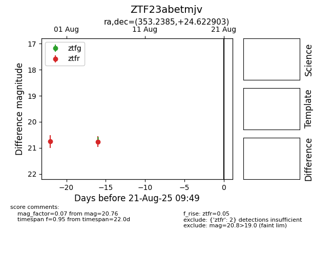

Target ZTF23abetmjv at 2025-08-21 09:49, see:
FINK: fink-portal.org/ZTF23abetmjv
Lasair: lasair-ztf.lsst.ac.uk/objects/ZTF23abetmjv
ALeRCE: alerce.online/object/ZTF23abetmjv
alt names
ZTF23abetmjv (ztf,alerce)
coordinates:
equatorial (ra, dec) = (353.2385,+24.62290)
galactic (l, b) = (101.0814,-34.89678)
photometry
last ztfr=20.76
2 ztfr detections
